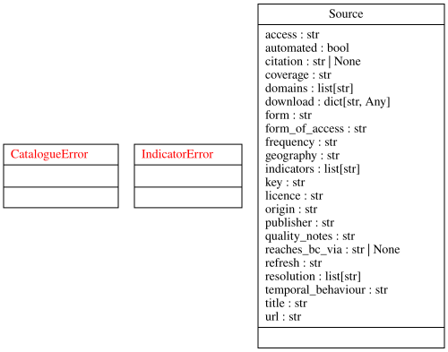
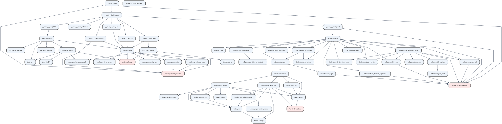

Project structure
Repository layout
state-of-health-bc/
├── README.md Project overview (start here on GitHub)
├── ROADMAP.md Milestones, deliverables, acceptance criteria
├── LICENSE GPL-3.0
├── pyproject.toml Python package metadata for the sohbc tooling
├── _quarto.yml Documentation site configuration
├── index.qmd Site landing page
├── references.bib Bibliography: sources cited in the docs
├── src/sohbc/ Acquisition and indicator tooling (Python)
├── scripts/ Maintenance scripts (diagram generation)
├── tests/ Tests for the sohbc tooling
├── data/
│ ├── catalogue/ Data-source catalogue (sources.yml) — committed
│ ├── published/ Tidy indicator datasets — committed
│ ├── raw/ Fetched data — gitignored, reproducible
│ └── manifest.json Fetch manifest with checksums — gitignored
├── tutorials/ Learning-oriented: guided lessons
├── how-to/ Task-oriented: task recipes
├── reference/ Information-oriented: lookup pages
├── explanation/ Understanding-oriented: concepts & context
└── .github/workflows/ CI: tests, site render, gh-pages deployThe analysis code and data pipeline grow with the milestones: the acquisition tooling (src/sohbc/) and the data-source catalogue land in M2; descriptive analysis (M3), dependence (M4), and causal work (M5) follow.
Diagrams
Two generated views of the sohbc package live in reference/diagrams/. Regenerate them with:
uv run python scripts/make_diagrams.py(Requires Graphviz. The documentation workflow regenerates them on every deploy, so the published diagrams always match the source.)
UML class diagram

Static call graph
Derived statically from the source: nodes are functions, methods, and classes (classes shaded red); edges are uses — calls and references such as exception handling.

Dynamic call graph
Derived dynamically at run time: an offline exercise of the CLI (validate, list, plan, indicators, build) is traced under cProfile and rendered with gprof2dot. Nodes are the functions actually executed, annotated with call counts and time; edges are calls observed during the run. This is a development tool only — its output is gitignored, since it depends on the code path exercised and the machine it ran on:
uv run python scripts/make_dynamic_callgraph.pyRunning the data pipeline
The sohbc tooling is a small Python package. After uv sync, run it through the project environment:
uv run sohbc validate # check the catalogue schema
uv run sohbc list # list catalogued sources
uv run sohbc check --all # verify source URLs
uv run sohbc fetch --all # fetch automated sources
uv run sohbc indicators # list defined indicators
uv run sohbc build # build published indicator datasetsFetched data lands in data/raw/ (gitignored) with a checksum recorded in data/manifest.json, so a clean checkout reproduces the dataset from the committed catalogue; tidy indicator datasets are published (and committed) under data/published/. See How to ingest a data source.
Run the tooling’s tests with:
uv run python -m unittest discover -s tests -vThe four Diátaxis sections
Each directory maps to one mode of the Diátaxis framework (Procida, n.d.):
| Directory | Mode | Character |
|---|---|---|
tutorials/ |
Learning | Lessons for newcomers, run start to finish |
how-to/ |
Task | Recipes for a specific job, assume prior knowledge |
reference/ |
Information | Neutral, accurate, structured for lookup |
explanation/ |
Understanding | Discussion that contextualises and deepens |
When adding a page, pick the section first, then write for that mode. A single topic can justify a page in more than one section — e.g. a recipe (“how to ingest a source”) and its background (“how the ingestion pipeline works”) are different pages, not one blended page.
Site configuration
_quarto.yml controls the site:
project.render— the exact list of files rendered into the site (README and LICENSE are deliberately excluded).website.navbar— navigation; add new pages there so they are reachable.format.html.theme— light (cosmo) and dark (darkly) themes.
Deployment
On every push to main, .github/workflows/docs.yml runs quarto render and publishes the built site from _site/ to the gh-pages branch. GitHub Pages serves that branch at https://galenseilis.github.io/state-of-health-bc.